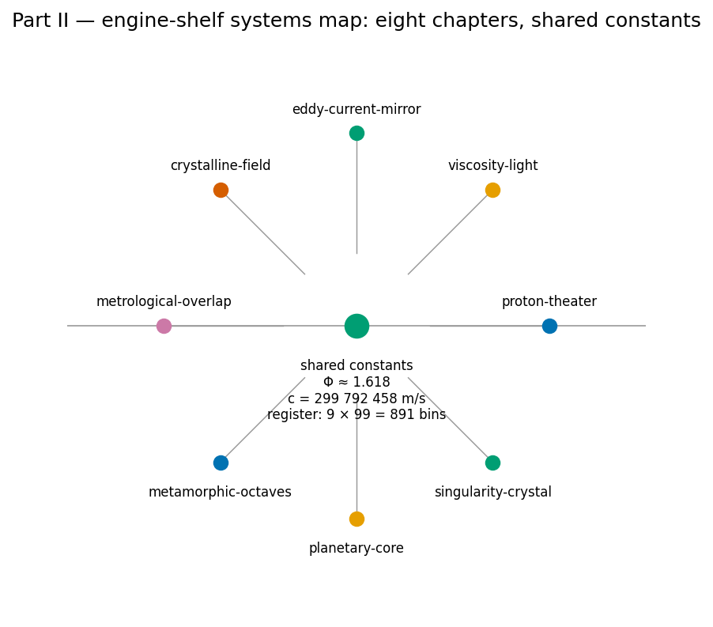

Part II: Core Systems: The Physical Engine Shelf

The shelf order in [@fig:part_II_unit-intro] is the reading order: the Phi duality of [@sec:part_II_proton-theater] opens the shelf, the transduction drag of [@sec:part_II_eddy-current-mirror] and the field filings that follow supply its dynamics, and the balances close at the singularity crystal ([@sec:part_II_singularity-crystal]).
The corpus divides its Infinite Octaves engine into parts, and Part II is where the catalog architecture touches the physical vocabulary most directly: light, drag, fields, measurement, and the constants that name them. The part’s through-line is a single discipline applied eight ways — every physical-sounding construct is filed, honestly and precisely, as catalog architecture under the engine shelf, with the honesty-first disclaimer stated before the formalism and the fair-exchange clause applied to the whole. You will meet constants that you know from physics — \(\hbar\), \(c\), damping coefficients, habitability bounds — but the part never claims to derive them; it claims to route them, into drawers, bands, and balance nodes whose bookkeeping you can check. That is the point of the physical engine shelf: coordination and cataloging, not physics derivation.
The part builds in a deliberate order. It opens with the simplest filing act on the shelf — a two-drawer digit map under the filing constant \(\Phi \approx 1.618\) — and then escalates, chapter by chapter, from static filings to dynamic balances:
- Proton Space, Electron Theater, and Φ Duality — [@sec:part_II_proton-theater] files leading digit 1 as Proton Space and structural 2 as Electron Theater, and introduces the Φ-duality mirror \((x\Phi,\; x/\Phi)\), the part’s first worked formalism.
- The Viscosity of Light — [@sec:part_II_viscosity-light] gives light a filed viscous character, a damping reading that the next chapter makes mechanical.
- The Eddy-Current Mirror: Transduction Drag — [@sec:part_II_eddy-current-mirror] formalises the eddy-current mirror as a transduction-line brake \(v(t) = v_0 e^{-kt}\), the part’s first dynamical law.
- The Crystalline Unified Field: Speed and Distance — [@sec:part_II_crystalline-field] files \(c = d/t\) as the crystalline-unified-field lattice and reads speed–distance iso-lines as filing bins.
- The Grand Unified Metrological Overlap — [@sec:part_II_metrological-overlap] quantifies agreement between measurements with the metrological-overlap coefficient.
- Metamorphic Octaves: Densification — [@sec:part_II_metamorphic-octaves] models exposure-driven densification \(1 + \ln(1 + x)\) over the octaves.
- Planetary Core and the Goldilocks Bands — [@sec:part_II_planetary-core] brackets filed values into habitability-style bands.
- The Holographic Singularity Crystal: Net Zero and Node k = 0 — [@sec:part_II_singularity-crystal] closes the part at the singularity-crystal’s net-zero balance and node \(k = 0\), the balance node first named in the part’s opening chapter.
How to use this part. Read the chapters in order the first time: each chapter’s worked formalism assumes only the ones before it, and the honesty-first discipline is easiest to learn on the two-drawer filing of [@sec:part_II_proton-theater] before it is applied to dynamics in [@sec:part_II_eddy-current-mirror] and balances in [@sec:part_II_singularity-crystal]. Prerequisites are Part 0 — the 99-octave ladder of [@sec:part_0_octave-map] and the corpus map of [@sec:part_0_orientation] — and Part I’s filing constant, formalised in [@sec:part_I_fractal-constant]. Every chapter pairs with a lab and a question bank; all computation goes through the tested functions in
textbook.models, never hand-rolled arithmetic. And keep the corpus’s own scope rule in view throughout: these are filings of a ship-blog catalog system, not CODATA/SI derivations, and the chapters say so wherever the sources do.